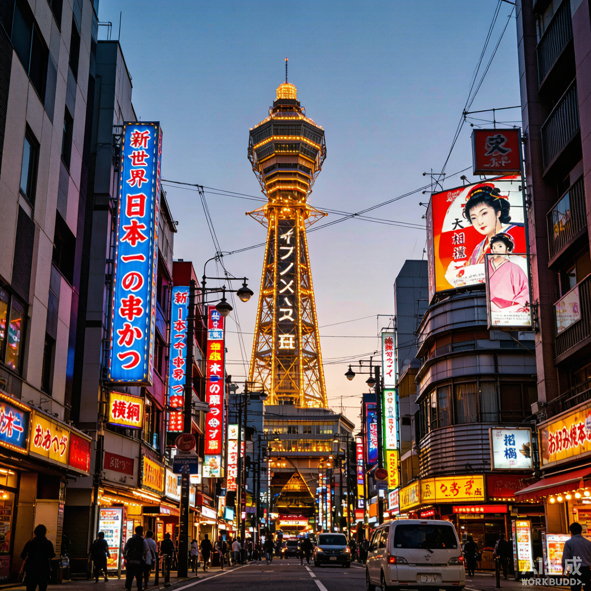
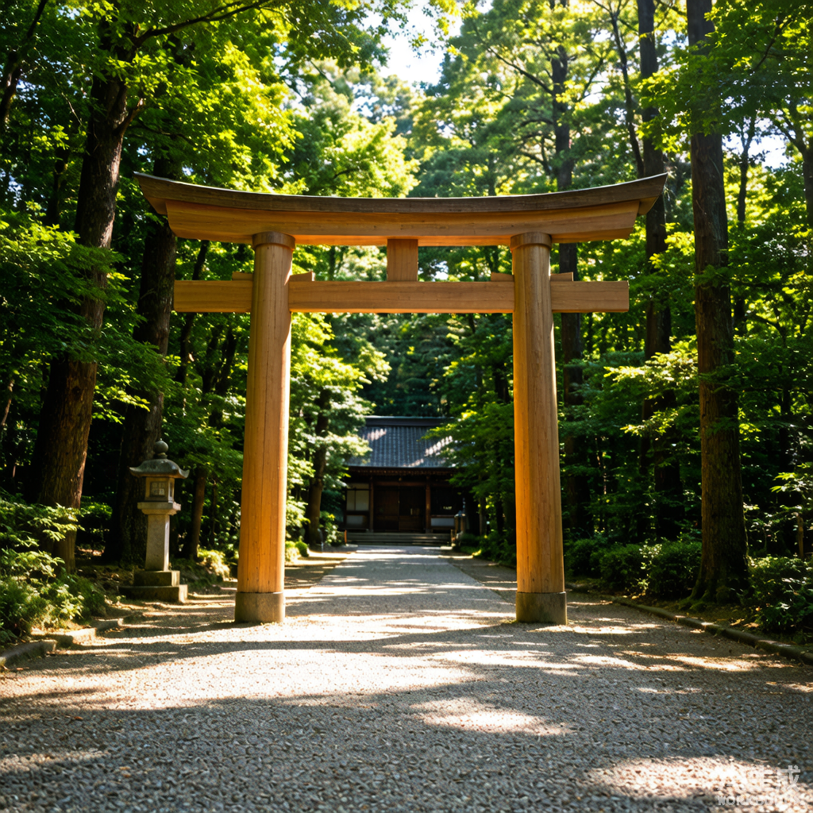
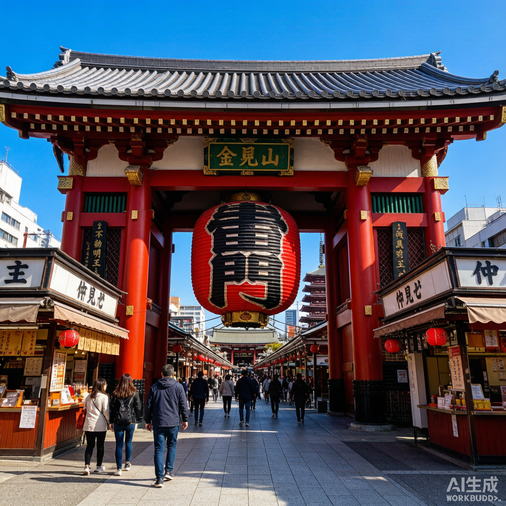
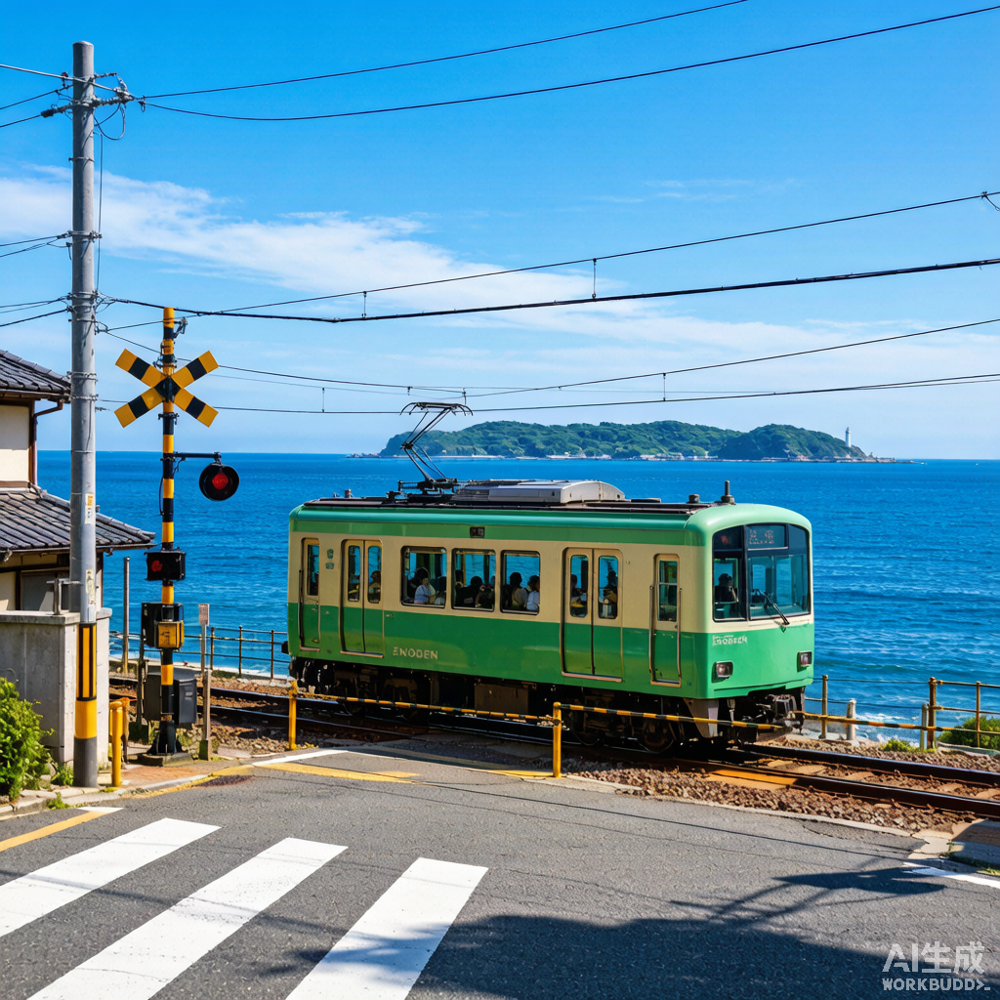
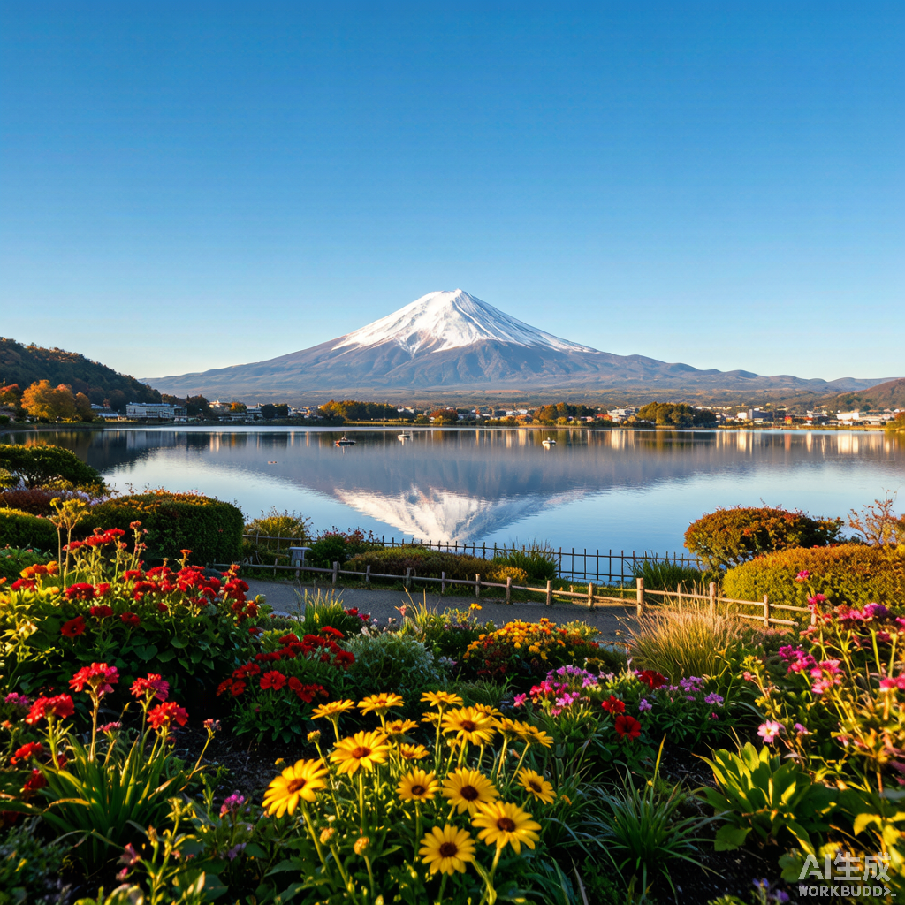
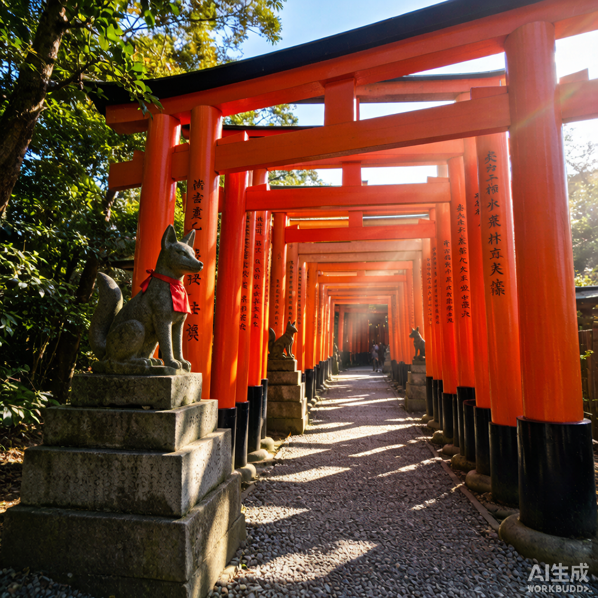
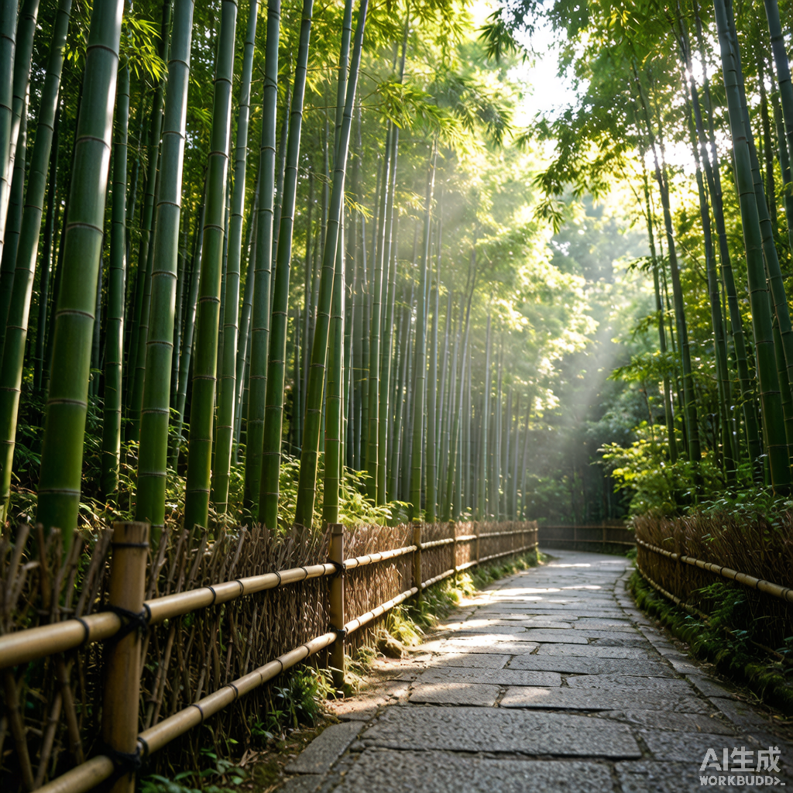
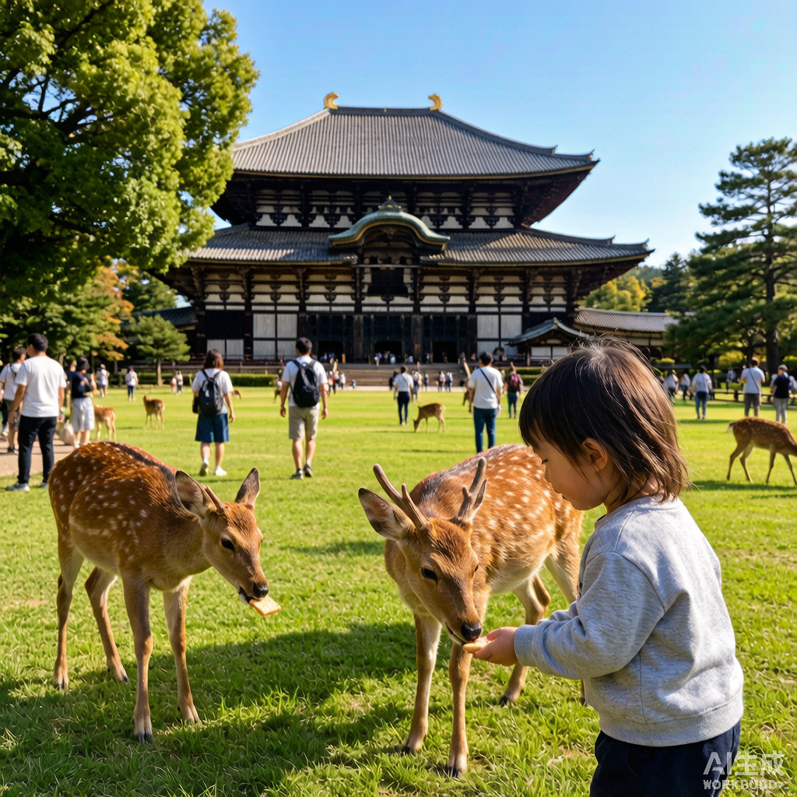
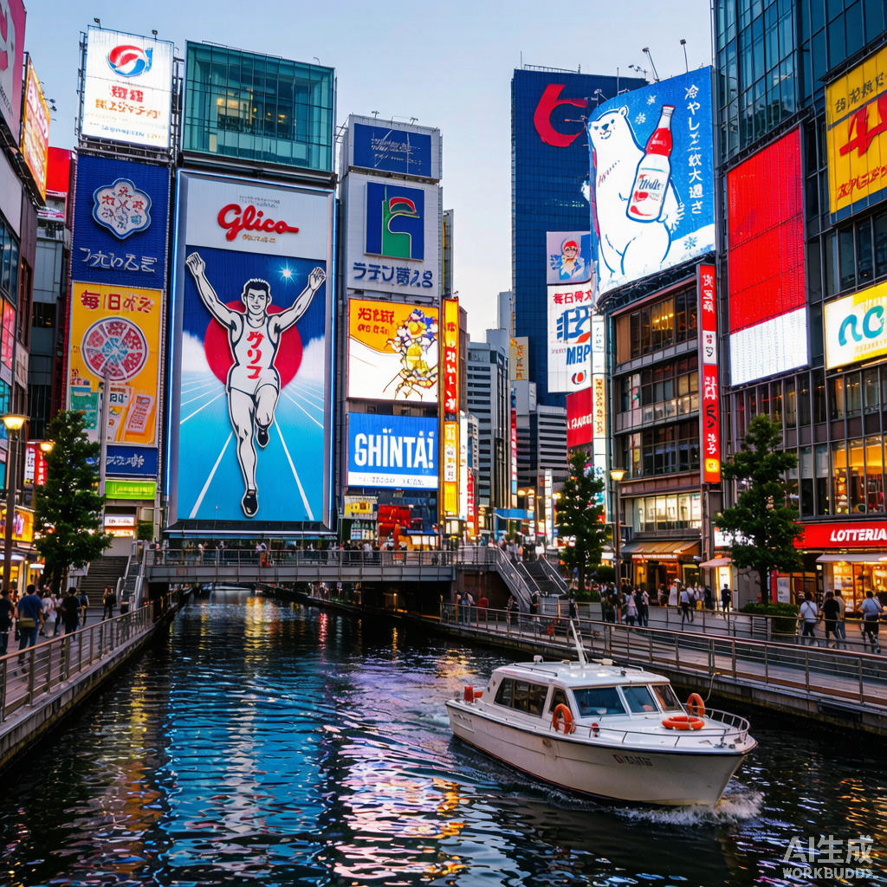
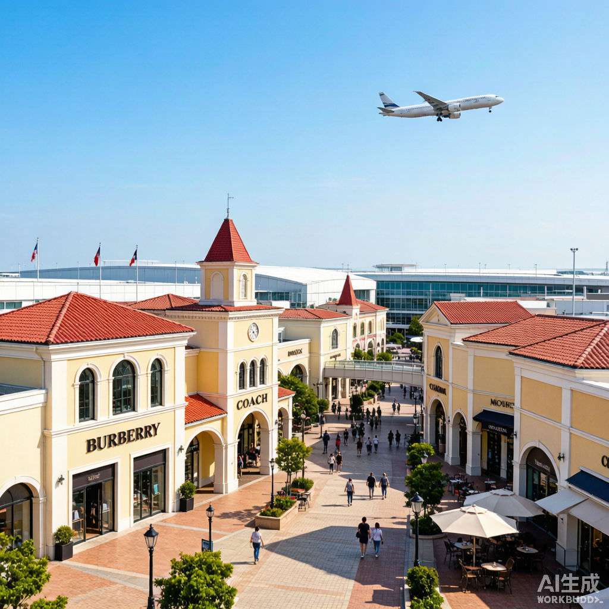

🗾 2026 日本亲子自由行 · 轻松完整版
🎯 行程定位
固定航班 SC8085 济南 11:20→关西 14:55 / SC8086 关西 16:00→济南 17:55。大阪作为入境和购物基地，东京负责都市与动漫，河口湖一晚温泉看富士，京都住 3 晚承接东山、岚山与任天堂博物馆晚场，最后心斋桥+临空奥莱完整购物收尾。全程轻松优先：每天约 4 个景点、2 个购物点、3 个美食体验，不硬塞。
🗺️ 全程路线
🔵蓝=关东 · 🟢绿=京都基地 · 🔴红=大阪/其他。为什么京都住 3 晚：任天堂博物馆只能约到 10/1 或 10/2 晚场，住京都时博物馆结束 30 分钟回酒店；住大阪则孩子要深夜跨城。多换一次酒店，换来京都两个完整夜晚 + 更稳的博物馆日 + 更从容的奈良日。
📅 9 晚分段与节奏
| 日期 | 住宿 | 主题 | 节奏 | 早起 |
|---|---|---|---|---|
| 9/25 周五 | 新大阪 | 抵达恢复 | 晚起型 | 否 |
| 9/26 周六 | 东京新宿 | 原宿·涩谷 | 新干线早班，下午酒店午休 | 是 |
| 9/27 周日 | 东京新宿 | 浅草·秋叶原·池袋 | 周日无高峰，正常节奏 | 否 |
| 9/28 周一 | 河口湖温泉 | 镰仓+温泉 | 7:00 出发避高峰，午后巴士补觉 | 是 |
| 9/29 周二 | 京都河原町 | 河口湖→京都 | 白天跨城补觉，晚上慢逛 | 否 |
| 9/30 周三 | 京都河原町 | 东山深度 | 7:00 出发，13:30–15:00 酒店午休 | 是 |
| 10/1 周四 | 京都河原町 | 岚山+任天堂博物馆 | 7:00 出发，午后车程补觉 | 是 |
| 10/2 周五 | 大阪梅田 | 奈良+梅田 | 9:30 后出发避高峰 | 否 |
| 10/3 周六 | 临空城 | 心斋桥购物 | 周六无高峰，购物主日 | 否 |
| 10/4 周日 | — | 奥莱补货+离境 | 航班硬约束 | 否 |
🚇 通勤高峰规避规则（已内置到每天）
| 场景 | 规则 |
|---|---|
| 平日市内地铁/JR | 不在 7:30–9:30 和 17:30–19:30 挤通勤线 |
| 早起看景点（伏见稻荷、岚山、镰仓） | 7:00–7:15 上车，赶高峰前通过；当天下午必留午休 |
| 晚间回酒店 | 要么 17:00 前回，要么吃完晚饭 19:30 后回，不夹在高峰里 |
| 周六日（9/27、10/3） | 无通勤高峰，可自然醒后出发 |
| 跨城新干线/高速巴士 | 全部排在工作日 10:00–16:00 之间，订座车厢=孩子补觉时间 |
⚠️ 出行前必读的 6 个关键判断
1. 国庆 + 日本秋季旺季叠加
9/25–10/4 覆盖中国国庆黄金周，10/1 起酒店涨价、关西机场回程值机排队剧增。长途移动（大阪→东京、河口湖→京都）全部安排在 9/30 前；10/1 后只做京都—奈良—大阪短半径移动。10/4 目标 13:00 前到关西机场。
2. 任天堂博物馆是唯一的"硬预约"
目标 10/1（周四）16:00 以后的票，备选 10/2 16:00 以后。门票实名、需持与票面一致证件入场，不能买转售票。现在起每天查官方余票/候补——拿到票的那一刻 Day 7 / Day 8 才最终定型（见"预约分支"页）。无票也不崩：Day 7 下午改宇治慢体验。
3. 通勤高峰规则
平日地铁/JR 避开 7:30–9:30、17:30–19:30。早起日 7:00–7:15 上车抢在高峰前；晚间 17:00 前或 19:30 后回酒店；跨城段全排在白天订座车厢。本行程每天的时间都是按这条规则排的。
4. 行李策略：9/27 晚东京大箱直寄京都
宅急便约 1,500–2,000 日元/件，9/27 寄、9/29 入住京都前必达；寄出时让东京前台电话确认京都酒店可代收。9/28–29 只背 1 晚小包去镰仓和河口湖。护照、贵重物、药品、充电宝永远随身。返程留 20kg 购物空间，保健品/酒类/液体必须托运。
5. 现金 vs 移动支付
支付宝/微信在东京、大阪市内覆盖 80%+。仍需现金：镰仓/河口湖/宇治小站、神社、寺庙门票、小店、自动售货机。建议带 8–10 万日元现金（3 人），7-11 ATM 银联可取。
6. 必备预约/手续清单
Visit Japan Web（前 7 天）；任天堂博物馆（每天查）；9/26 Nozomi 指定席（约 8/26 10:00 JST 开售，SmartEX）；9/28 藤泽→河口湖巴士、9/29 河口湖→三岛巴士+三岛→京都新干线（开售后即订）；岚山小火车；河口湖旅馆（含晚餐+站接送）。Shibuya Sky、Kirby Café OSAKA 全部是可删加分项。
🗓️ 10 天 9 晚逐日行程 · 完整展开版
每天左侧是时间线，右侧「本日最推荐」给出景点/美食/购物的首选具体店与点位（配图 + 官网 + Google 地图链接），备选并列其后；每天末尾是配额与午休。「可选」项都可整体删除而不影响当天。图片 © Wikimedia Commons，点击图片可查原图。
9/25 周五 · 抵达｜落地关西·新大阪恢复夜

⏱️ 当日时间线
- 14:55落地→入境、取行李、买 ICOCA、取现金
- 17:00Haruka 至新大阪，入住
- 18:15新世界街区+通天阁外围夜景（不登塔）
- 19:00串炸晚餐
- 20:00便利店买次日新干线早餐、儿童零食
- 21:30前熄灯

📝 详细描述（Day 1 补充）
🎯 景点详解
大阪最具昭和风情的街区，1912 年建成时模仿巴黎与纽约的游乐区。通天阁高 108 米、1956 年重建，被称为“大阪的埃菲尔铁塔”。不登塔，外围的霓虹灯牌与复古招牌就是最佳拍照背景，30 分钟轻松搞定。
新世界腹地的小巷，比主街更有烟火气，老铺居酒屋与棋牌室林立，昭和味十足，适合顺路穿行感受。
🍜 美食详解
通天阁脚下的串炸本店。各种食材裹上面衣油炸，“酱汁禁止二次蘸”是这里的铁律。白饭、乌冬、玉子烧孩子都能吃，第一晚不硬排。
🛍️ 购物详解
抵达日晚间便利店一站式买齐次日新干线早餐、儿童零食、饮料，省时省力。
😴 抵达日不凑数，休息优先
9/26 周六 · 跨越｜早班新干线→原宿·涩谷

⏱️ 当日时间线
- 07:09Nozomi 新大阪→东京（约 2.5h，车上早餐+补觉）
- 10:00新宿酒店寄存行李（已过早高峰）
- 11:00明治神宫
- 12:00表参道午餐
- 13:00竹下通（只走核心段）+可丽饼
- 13:40表参道慢走
- 14:30回酒店入住+孩子午休（至 16:30）
- 16:30涩谷十字路口、Hachiko、中心街
- 17:00涩谷 PARCO：Nintendo TOKYO
- 18:00涩谷晚餐
- 19:30PARCO/109 短逛后回新宿（避高峰）
⭐ 本日最推荐
🎯 景点

🍜 美食
🛍️ 购物

📝 详细描述（Day 2 补充）
🎯 景点详解
东京最大的神社，占地 70 公顷，参道森林种植了约 10 万棵树木。大鸟居高 12 米、由 1500 年树龄的桧木制成，是日本最大的木制鸟居。路面平缓适合推车，清晨光线穿过树梢格外宁静。
原宿青少年文化的中心，全长约 400 米，两侧是平价时尚店与可丽饼店。只走核心段即可，避免深入小巷迷路。
世界最繁忙的十字路口，每次绿灯约有 3000 人同时穿越。车站前的忠犬八公雕像是忠诚的象征，可以给孩子讲个温情小故事。
🍜 美食详解
表参道旁创业 70 多年的老牌炸猪排店，备有儿童餐具，里脊炸猪排肉质软嫩，孩子接受度高。
可丽饼创始老店（1977 年开业），甜口草莓奶油、咸口火腿芝士都有，边走边吃是原宿的经典体验。
回转寿司，新鲜实惠，孩子可以自己拿喜欢的盘子，互动性强、上菜快。
🛍️ 购物详解
涩谷 PARCO 6F 任天堂官方直营店，免费入场，有马里奥/动森/塞尔达限定周边与游戏试玩区。排队超 20 分钟建议放弃。
同层宝可梦中心，限定商品与拍照区，皮卡丘和伊布是孩子的最爱。
😴 午休 14:30–16:30 酒店
✂️ 删减顺序：Shibuya Sky → 表参道 → 任天堂店
9/27 周日 · 东京｜浅草·上野·秋叶原·池袋

⏱️ 当日时间线
- 08:30早餐、出发（周日无高峰，不用早起）
- 09:30浅草寺：雷门—仲见世—本堂
- 11:30上野/阿美横丁午餐
- 12:30上野公园跑一跑
- 13:30秋叶原：扭蛋、模型、游戏机厅（先定预算）
- 15:30电车回新宿方向，车上补觉
- 16:00池袋 animate 旗舰店（营业至 21:00）
- 18:00池袋晚餐
- 19:30买次日路早；打包寄大箱到 Hilton Kyoto，只留 1 晚小包
⭐ 本日最推荐

🍜 美食

🛍️ 购物

📝 详细描述（Day 3 补充）
🎯 景点详解
东京最古老的寺庙，始建于 628 年。雷门大灯笼高 3.9 米、重 700 公斤，是浅草的象征。穿过雷门就是约 250 米的仲见世通，90 多家老铺卖人形烧、扇子、和风小物。教孩子先在水手舍洗手再参拜，体验日本礼仪。
日本第一座公园（1873 年），占地约 53 公顷，园内有博物馆、动物园、不忍池。周日无早高峰，适合让孩子奔跑放电。
一栋楼集中模型、手办、卡牌、扭蛋，是御宅文化的圣地。先定预算再逛，避免冲动消费。
🍜 美食详解
不忍池旁创业 260 多年的鳗鱼饭老铺，鳗鱼软嫩、酱汁微甜，午市套餐性价比高，2 楼可眺望池景。
浅草经典伴手小吃，红豆馅的传统点心，刚出炉时外皮微脆、内馅温热。
浓郁豚骨汤底拉面，叉烧厚实，口味大众，孩子也能接受。
🛍️ 购物详解
日本最大的动漫周边店，共 9 层楼，角色周边、漫画、文具、CD 一应俱全，是动漫迷的朝圣地。
扭蛋专门店，数百台扭蛋机，从动漫角色到动物模型应有尽有，200–500 日元一次，孩子最爱。
😴 午休 15:30–16:00 车上（也可 15:00 回酒店躺 1 小时）
✂️ 删减：池袋 → 上野公园
9/28 周一 · 转场｜镰仓半日→河口湖温泉夜

⏱️ 当日时间线
- 07:00JR 湘南新宿线→镰仓（高峰前通过），换江之电
- 08:30镰仓高校前：官方安全区域拍照
- 09:00江之电沿海短乘
- 09:45镰仓大佛
- 10:45小町通早午餐
- 12:30藤泽→河口湖直达巴士（已订座，全车补觉）
- 15:00河口湖站 10 号站牌旅馆接送、入住、房间休息
- 16:30浴衣、榻榻米、第一次温泉（孩子浅尝即可）
- 18:00旅馆日式晚餐（须 18:00 前到站）
- 19:30房内桌游/绘本/日式小点；第二次温泉成人轮流
⭐ 本日最推荐
🎯 景点

🍜 美食

📝 详细描述（Day 4 补充）
🎯 景点详解
《灌篮高手》OP 名场面，江之电绿皮小火车穿越道口，背景是蔚蓝的湘南海岸。只在海侧官方安全区域拍照，不站轨道、不堵道口，带孩子感受“动漫照进现实”。
1902 年开通的怀旧电车，全长约 10 公里，沿途经过海边、隧道、古刹，是体验湘南风情的最佳方式，沿海段风景最美。
日本第二大青铜佛像，高 13.35 米、重约 121 吨。佛像内部可付费进入参观，感受中世纪铸造技术的震撼。
🍜 美食详解
镰仓名物银鱼盖饭，使用湘南海岸当日捕获的新鲜小银鱼。坐下吃 40 分钟，是赶巴士前最重要的体力补给。
镰仓百年老铺的鸽子黄油饼干，包装精美、口感酥脆奶香，是最佳小伴手礼。
🛍️ 购物详解
不为特定网红店排队，随意逛逛更有惊喜：传统工艺品、湘南特产、手作饰品。
😴 午休 12:30–15:00 巴士 + 15:00–16:30 房间
✂️ 删减：湖畔夜走 → 江之电延长段 → 大佛
9/29 周二 · 跨越｜河口湖清晨→京都河原町夜

⏱️ 当日时间线
- 06:30清晨湖景/温泉：安静看富士的最佳窗口
- 07:15旅馆早餐、退房
- 08:30大石公园/湖畔短走（红线巴士或出租车）
- 09:45站前伴手礼
- 10:30ほうとう午餐
- 11:30河口湖→三岛巴士（订座，补觉）→三岛→京都 Hikari
- 15:00Hilton Kyoto 入住、洗澡、休息；确认大箱已到
- 17:00先斗町短走
- 18:00京都晚餐
- 19:00鸭川/河原町短走；药妆预逛（只看价不扫货）


📝 详细描述（Day 5 补充）
🎯 景点详解
位于河口湖北岸，是拍摄“湖面+富士山”明信片机位的最佳地点。四季花卉不同：春季郁金香、夏季薰衣草、秋季波斯菊。红线巴士直达，步道平缓适合推车，上午人少光线柔和。
京都最有风情的花街，狭窄的石板路两侧是料亭与茶屋，傍晚点灯后最美，带孩子感受古都的“慢生活”。
鸭川与支流交汇处，傍晚短走，看夕阳染红河面，是京都人日常的风景，河岸处处是悠闲的氛围。
🍜 美食详解
山梨第一名物，味噌汤底的手打宽面，加入南瓜、芋头、蘑菇等蔬菜，热乎软烂。车站对面，方便赶车。
京都第一晚只做城市生活体验、不赶寺院，轻松吃顿好的。汤豆腐是京都名物，水质好、豆腐格外细腻。
🛍️ 购物详解
山梨葡萄点心、富士山饼干、ほうとう味手信一站买齐，控制在 20 分钟内。
只比价不扫货，把正式采购留给 Day 9，先熟悉位置与价格。
😴 全天车程补觉 + 15:00–16:30 房间
9/30 周三 · 京都｜东山深度

⏱️ 当日时间线
- 07:00京阪线→伏见稻荷（高峰前上车）
- 08:00伏见稻荷大社：千本鸟居，奥社奉拜所折返，不登顶
- 10:15清水寺：舞台、音羽瀑布（排队超 20 分钟跳过）
- 11:30二年坂午餐，坐下 45 分钟
- 12:30三年坂→宁宁之道；清水坂小店
- 13:30回酒店午休（至 15:00，大人轮流咖啡）
- 15:00祇园·花见小路→八坂神社
- 16:00抹茶/和果子茶歇
- 16:30锦市场
- 18:00先斗町/鸭川边晚餐，步行回酒店


📝 详细描述（Day 6 补充）
🎯 景点详解
全日本约 3 万座稻荷神社的总本宫，以“千本鸟居”闻名。鸟居由企业与个人捐赠，从山脚绵延到山顶约 4 公里。8 点前抵达几乎包场，鸟居隧道的光影最好。只走前段不登顶，孩子可写绘马、选御守。狐狸是稻荷神的使者，神社内随处可见狐狸雕像。
始建于 778 年，世界文化遗产。清水舞台高 13 米，由 139 根巨型榉木柱支撑、未用一根钉子，是日本建筑史的奇迹。音羽瀑布三道泉水分别寓意长寿、学业、爱情，可排队饮用。
京都最经典的坡道，两侧是町屋（传统木造建筑），石板路、木格子窗、垂帘，仿佛穿越回江户时代，和果子店与手工艺品店适合慢慢逛。
京都艺伎文化的中心，傍晚有机会偶遇艺伎或舞伎穿着华丽和服走过。不追拍、不进私道，尊重当地文化。
祇园的镇守神社，以“美御前社”闻名，据说可保佑美貌，夜间灯笼点亮后格外梦幻。
“京都的厨房”，长约 390 米，130 多家店铺售卖渍物、海鲜、和牛、抹茶甜品、豆乳甜甜圈等，室内逛着不受天气影响。
🍜 美食详解
清水寺步行 5 分钟的汤豆腐名店，豆腐清淡软嫩，有米饭套餐，午市定食价格合理。
抹茶芭菲下午茶，层层叠叠的抹茶冰淇淋、白玉团子、红豆，是京都抹茶甜品的代表。
🛍️ 购物详解
清水坂 370 年七味粉老铺，可买京都特色调味料，由辣椒、山椒、芝麻、陈皮等七种香料调配。
扇子、香袋、手帕等传统小物，精致且价格亲民，适合作为手信。
😴 午休 13:30–15:00 酒店
🌧️ 雨天：压缩街区步行，锦市场提前
10/1 周四 · 关键日｜岚山 + 16:00 任天堂博物馆

⏱️ 当日时间线
- 07:00河原町→岚山（高峰前上车），车上早餐
- 08:45岚山小火车（订座；无票直接跳过）
- 10:00竹林小径+野宫神社
- 11:00天龙寺庭园
- 12:00渡月桥河岸休息
- 12:30岚山午餐
- 13:20岚山小店（只选一家）
- 14:00岚山→宇治小仓（车上补觉）
- 16:00任天堂博物馆：历史展→互动→花札→限定商店；馆内咖啡
- 19:30回河原町；京都晚餐（酒店附近坐下吃）
⭐ 本日最推荐
🎯 景点

🍜 美食
📝 详细描述（Day 7 补充）
🎯 景点详解
沿保津峡运行的观光列车，25 分钟开放式车厢可欣赏峡谷、溪流与红叶（秋季）。必须提前订指定席，无票直接跳过。火车沿溪而行，下方是碧绿的保津川。
长约 500 米，两侧是高耸入云的孟宗竹，风过竹林声如天籁。清晨或傍晚人较少，光影透过竹叶洒落，是岚山最具代表性的风景。
世界文化遗产，曹源池庭园是“借景”造园的杰作，将岚山与龟山融入庭园画面，一步一景。
横跨桂川的木桥，长约 155 米，是岚山的象征。桥畔休息，看河水缓缓流过，感受古都的宁静。
位于宇治小仓，2024 年开业的任天堂官方博物馆，展示从 1889 年花札纸牌到 Switch 的完整产品史。互动区可体验经典游戏，花札制作工坊可亲手做一副花札，限定商店只有持票者能进。
🍜 美食详解
竹林旁的平价汤豆腐名店，11:30 开门就去。岚山豆腐以当地泉水制作，口感滑嫩，定食包含汤豆腐、米饭、渍物。
有票才能使用，提供任天堂主题甜品与饮品，如蘑菇王国蛋糕、星星饼干等。
🛍️ 购物详解
只有持票者能进，限定商品外面买不到。放在离馆前最后 30 分钟，先玩再买，推荐花札、复古 T 恤、限定徽章。
布艺手作小物店，传统京友禅织物制成的饰品与杂货，精致独特。
😴 午休 14:00–15:00 车上补觉
🔀 票面 17:00 后：午后先回酒店午休再去；无票：下午改宇治慢体验
10/2 周五 · 跨越｜奈良精华→大阪梅田

⏱️ 当日时间线
- 09:30近铁京都→近铁奈良（避开早高峰）
- 10:30奈良公园喂鹿 + 东大寺大佛殿
- 12:00奈良町午餐
- 13:00奈良町慢走；奈良小物
- 14:00猿泽池/浮见堂；吉野葛/和果子茶歇
- 15:00近铁→大阪（车上补觉，晚高峰前抵达）
- 16:00Hilton Osaka 入住、休息
- 17:00梅田购物
- 18:30梅田晚餐

📝 详细描述（Day 8 补充）
🎯 景点详解
占地约 660 公顷，生活着约 1200 头野生鹿，被视为神的使者。鹿仙贝约 200 日元/包，喂完摊开双手表示“没有了”。小鹿会鞠躬讨食，是孩子的全程高光时刻。注意护好地图和纸张，鹿会抢食。
世界文化遗产，大佛殿是世界最大木造建筑（高 49 米、宽 57 米），殿内大佛高 15 米，是奈良的象征。
保留江户时代格子窗町屋的老街区，现已改建为咖啡馆、杂货店、画廊，石板路与木建筑充满怀旧氛围。
水边平缓收尾，浮见堂是池中的传统建筑，倒影如画，适合下午歇脚喝茶。
🍜 美食详解
创业 150 多年的老铺，柿子叶包裹的寿司清淡好拿，可外带当车上点心。柿叶有天然防腐作用，是奈良独特的保存食文化。
吉野葛点心/葛切下午茶，葛根制成的透明凉粉口感清爽，是奈良传统甜品。
🛍️ 购物详解
300 年奈良老铺的现代杂货店，鹿麻织小物、手帕、文具，将传统工艺与现代设计结合，是最值得买的奈良手信。
食品层/童装/户外品牌齐全，百货 20:00 关门前先去，地下食品层适合补伴手礼。
😴 午休 15:00–16:00 车上 + 16:00–17:00 房间
✂️ 删减：猿泽池 → 奈良町
10/3 周六 · 购物主日｜心斋桥主购物→临空奥莱

⏱️ 当日时间线
- 09:00黑门市场早午餐
- 10:00道顿堀/戎桥：白天版固力果招牌
- 10:40法善寺横丁
- 11:30大丸心斋桥+PARCO：先办退税流程的店
- 13:00心斋桥午餐（Kirby Café 仅预约成功时）
- 14:00心斋桥筋：按清单入店，每家最多 20 分钟
- 15:30美国村；孩子咖啡厅休整 30 分钟（大人轮逛）
- 16:15橘通/堀江补货；咖啡甜品茶歇
- 17:30南海电铁→临空城，入住
- 18:30临空奥莱第一轮：只买试尺码大件
- 20:00RINKU FOOD PARK 晚餐（19:45 最后点餐）
⭐ 本日最推荐

🍜 美食


📝 详细描述（Day 9 补充）
🎯 景点详解
大阪第一标志，固力果跑跑人霓虹招牌自 1935 年设立以来就是道顿堀的象征。上午 10 点前人少好拍，戎桥横跨道顿堀川，是最佳拍摄点。
闹中取静的古老小巷，石板路两侧是居酒屋与料亭。水挂不动明王像被信徒泼洒清水多年、表面长满青苔，是独特景观。
大阪年轻人文化的聚集地，街头艺术与潮流店铺，感受大阪的活力。
🍜 美食详解
“大阪的厨房”，烤扇贝、烤蟹腿、玉子烧、水果切片，早午餐一站解决。市场内可直接站着吃，气氛热闹。
大阪烧名店，面糊中加入卷心菜、猪肉、海鲜，铁板煎制后淋上美乃滋与酱汁，是大阪的灵魂美食。
临空城的晚餐选择，513 个座位分口味点餐，和食到洋食都有，选择丰富。
🛍️ 购物详解
购物主战场。先在大丸/PARCO 完成退税类，再沿心斋桥筋按清单入店，每家最多 20 分钟。心斋桥筋是长约 600 米的拱廊商业街，平价药妆到高端百货应有尽有。
TNF/Patagonia/Arc'teryx/Columbia 常态 3–7 折。第一轮（今晚）只买必须试尺码的大件。
保健品一次买齐，常比松本清便宜 5–15%。
😴 午休 15:30–16:15 咖啡厅/商场休息区
♨️ 有马温泉：仅前 8 天全顺且孩子状态好时上午插入，默认不加
10/4 周日 · 返程｜奥莱精准补货→关西机场→济南

⏱️ 当日时间线
- 08:00早餐、退房、寄存行李；托运/随身分装
- 10:00临空奥莱第二轮：只补 Day 9 缺尺码/缺型号
- 11:30Food Park 快速早午餐或外带
- 12:00取行李、前往 KIX（1 站/酒店接驳）
- 13:00值机、托运、安检、退税（免税店不是主购物场）
- 16:00SC8086 起飞回济南
⭐ 本日最推荐
🍜 美食
📝 详细描述（Day 10 补充）
🎯 景点详解
今日为返程日，无新增景点安排。
🍜 美食详解
饭/面/蛋包饭等稳定主食，快速解决、不让孩子空腹进机场。
安检后的备选，稳定可靠。
🛍️ 购物详解
10:00 开门直入目标店，只买 Day 9 记录的缺尺码/缺型号，不新开主题，11:30 必须停手。
⚠️ 国庆回程峰值，13:00 前到机场
🏨 住宿规划（9 晚）
积分房需在 Hilton Honors / Marriott Bonvoy 账户内以「2 成人 + 1 名 5 岁儿童」查询复核。先订可取消现金房，积分房出现后再替换。
| 晚 | 日期 | 区域 | 推荐酒店 | 选择原因 |
|---|---|---|---|---|
| 1 | 9/25 | 新大阪 | Courtyard by Marriott Shin-Osaka Station | 次日早班新干线，住站上最稳 |
| 2–3 | 9/26–27 | 东京新宿 | Hilton Tokyo（西新宿） | 两天分别走东京西/东北，回程方便 |
| 4 | 9/28 | 河口湖 | Hotel Asafuji 或同级含晚餐温泉旅馆 | 价值在日式晚餐+湖景+温泉+榻榻米；约 10 号站牌接送，晚餐 18:00/18:30/19:00 可选，温泉开放至 23:30 |
| 5–7 | 9/29–10/1 | 京都河原町 | Hilton Kyoto；备选 DoubleTree 京都站 | 步行可达祇园、锦市场、先斗町；博物馆结束 30 分钟回房 |
| 8 | 10/2 | 大阪梅田 | Hilton Osaka | JR 大阪站 2 分钟，地下通道连商场，适合梅田购物和次日取行李 |
| 9 | 10/3 | 临空城 | Star Gate Hotel Kansai Airport 或临空城站周边 | 当晚奥莱第一轮 + 次日补货，去机场 1 站，Day 10 完全不赶 |
少换酒店替代
10/3 可续住 Hilton Osaka，Day 10 早班南海电铁 40 分钟到机场；但 10/4 需 11:00 前出发，奥莱补货时间减半。默认仍推荐末晚住临空城。
行李流转
9/27 晚东京大箱宅急便寄 Hilton Kyoto（9/29 入住前必达，前台电话确认代收）。9/28–29 只背 1 晚小包（换洗、雨具、儿童睡衣、常用药、安抚物）。护照、贵重物、药品、充电宝永远随身。
🚄 跨城交通（全部订座制，白天=补觉时间）
| 段 | 日期 | 方式 | 耗时 | 关键动作 |
|---|---|---|---|---|
| 关西机场→新大阪 | 9/25 | JR Haruka 直达 | 约 50 分钟 | 落地后只办必要事项 |
| 新大阪→东京 | 9/26 | Nozomi 07:09 左右，指定席 3 人相邻 | 约 2.5 小时 | SmartEX 开售后即订；不选名古屋换乘组合 |
| 新宿→镰仓 | 9/28 | JR 湘南新宿线，7:00 前后上车 | 约 55 分钟 | 赶通勤高峰前通过 |
| 藤泽→河口湖 | 9/28 | 神奈中高速巴士（预约制） | 约 2.5 小时 | 无座则改 JR 新宿→大月→富士急行 |
| 河口湖→三岛 | 9/29 | 高速巴士（预约制） | 约 1 小时 20 分 | 班次少必订；为新干线留 45–60 分钟缓冲 |
| 三岛→京都 | 9/29 | Hikari 优先，无则 Kodama 直达 | 约 1 小时 50 分 | 不在新大阪换乘 |
| 京都→奈良→大阪 | 10/2 | 近铁（奈良站离公园最近） | 各约 40–50 分钟 | 9:30 后出发、15:00 前后离开奈良 |
| 大阪→临空城 | 10/3 | 南海电铁 / JR | 约 40 分钟 | 先回酒店取大箱再去 |
🚇 市内交通 & 高峰对照
东京
JR 山手线+地铁；新宿→原宿/涩谷选 JR 或副都心线；避开 7:30–9:30 / 17:30–19:30
京都
京阪电铁+地铁+短程出租车，不依赖堵车的市巴士；河原町住宿区大量步行
岚山
去程 JR 嵯峨野线或阪急（河原町出发更顺）；岚电用于体验和转场
ICOCA
落地关空即买，儿童版半价；东京通用，iPhone 可绑 Apple Pay
每天的高峰避法
| 日期 | 高峰风险 | 处理 |
|---|---|---|
| 9/26 周六 | 无 | — |
| 9/28 周一 | 早高峰 | 7:00 前后上新宿→镰仓 JR，高峰前通过 |
| 9/29 周二 | 双高峰 | 全天在高速巴士/新干线订座车厢里 |
| 9/30 周三 | 早高峰 | 7:00 京阪河原町上车，8 点前到伏见稻荷 |
| 10/1 周四 | 早高峰 | 7:00 前后出发去岚山；16:00 进博物馆正好错过晚高峰 |
| 10/2 周五 | 双高峰 | 9:30 后离开京都；15:00 前后离开奈良，晚高峰前到大阪 |
🛍️ 购物清单（按区域落位）
🗼 东京（Day 2–3，只买"东京限定"小件）
涩谷 PARCO
Nintendo TOKYO、动漫/游戏楼层
秋叶原
扭蛋、模型、游戏机厅（先设预算）
池袋 animate 旗舰店
角色周边、漫画、文具（营业至 21:00）
⚠️ 东京只买小件和限定品，大宗购物全部留在大阪，免得拎去河口湖。
⛩️ 京都（Day 5–7 轻量）
清水坂/二三年坂：扇子、香袋、手帕 · 锦市场：茶、干货、漬物 · 岚山：和果子、竹工艺 · 任天堂博物馆商店：限定商品（有票才有）
🐙 大阪（Day 8–9 主战场）
| 区域 | 时间 | 目标 |
|---|---|---|
| 梅田（Day 8） | 17:00–18:30 | 阪急/大丸食品层、童装、户外品牌（Mont-bell、Snow Peak、TNF 紫标） |
| 大丸/PARCO（Day 9） | 11:30–13:00 | 护肤药妆、日系品牌、角色商品（先办退税） |
| 心斋桥筋（Day 9） | 14:00–15:30 | 运动鞋、服饰、药妆、零食伴手礼 |
| 美国村（Day 9） | 15:30–16:15 | 潮牌、古着（BAPE、Supreme、Stüssy） |
| 临空奥莱（Day 9 晚） | 18:30–20:00 | 试尺码大件：运动鞋、户外服、童装、行李箱 |
| 临空奥莱（Day 10） | 10:00–11:30 | 只补缺尺码/缺型号 |
💊 药妆/保健品（Day 9 下午一次买齐）
| 品类 | 推荐 | 备注 |
|---|---|---|
| 综合维生素 | DHC、Fancl | DHC 最便宜 |
| 眼药水 | 参天 FX、乐敦 | 注意限购 |
| 益生菌 | 强力 Wakamoto、新ビオフェルミンS | 经典便宜 |
| 儿童用品 | 小林冰宝贴、儿童钙/DHA | 亲子必带 |
| 胶原蛋白 | Fancl、明治 |
退税：单店满 5,000 日元（不含税），护照原件；消耗品密封离境前不拆。海关：保健品单品种 ≤6 瓶/人，礼品总价 ≤5,000 元免税。大国药妆常比松本清便宜 5–15%。
🍜 必吃清单（按区域）
大阪
新世界串炸、黑门市场烤扇贝/玉子烧、章鱼烧、千房大阪烧、一蘭拉面、梅田新梅田食道街、RINKU FOOD PARK
东京
原宿可丽饼、涩谷回转寿司/亲子盖饭、上野鳗鱼饭、浅草人形烧/炸馒头
镰仓·河口湖
小町通鳗鱼饭/海鲜丼、河口湖ほうとう、旅馆日式晚餐（核心体验）
京都·宇治·奈良
汤豆腐/湯叶、荞麦、抹茶和果子、先斗町京料理、宇治抹茶（无票分支）、奈良柿叶寿司/茶粥/吉野葛
🎫 关键预约与分支总表
| 优先级 | 项目 | 成功 | 失败/无票 |
|---|---|---|---|
| 1 | 任天堂博物馆 | 10/1 16:00 后 → Day 7 主线；17:00–18:00 场 → 午后先回酒店午休再去；10/2 场 → Day 7 改岚山完整日、Day 8 下午博物馆（奈良移到 Day 9 上午） | Day 7 下午改宇治慢体验；Nintendo KYOTO 仅顺路；不买转售票 |
| 2 | 9/26 Nozomi 指定席 | 07:09 优先 | 改 06:15 或更晚班次；不用名古屋换乘组合 |
| 3 | 藤泽→河口湖巴士 | Day 4 午后直达 | 改 JR 新宿→大月→富士急行（约多 1 小时，删小町通短走） |
| 4 | 河口湖→三岛巴士 | Day 5 主线 | 无座走铁路绕行，三岛新干线改晚一班 |
| 5 | 岚山小火车 | Day 7 首项 | 直接竹林+野宫+天龙寺+渡月桥，只问一次当日余票 |
| 6 | Kirby Café OSAKA | Day 9 13:00 午餐 | 普通午餐 + 更完整购物时间 |
| 7 | Shibuya Sky | Day 2 晚间 | 涩谷夜景替代 |
| 8 | 东京→京都行李寄送 | Day 3 晚寄出 | 改随身 + 新干线带大件行李区座位 |
博物馆票务决策
10/1 16:00–17:00：主线执行，上午岚山下午小仓，不加金阁寺。10/1 18:00 后：岚山午餐后回酒店午休，15:30 再去小仓。10/2 场：Day 7 岚山完整日，Day 8 下午博物馆，奈良移到 Day 9 上午。无票：Day 7 下午宇治慢体验。拿到票后保存二维码、护照和同行人信息离线截图。
👶 亲子专属贴士
儿童 ICOCA 半价
落地即办，东京关西通用
午休纪律
4 个早起日（9/26、9/28、9/30、10/1）都内置午休或车程补觉，不要因为"状态还行"就砍掉——疲劳是累积的
补觉场景已设计
Nozomi 2.5h、藤泽—河口湖巴士 2.5h、河口湖—三岛—京都 3h、奈良往返 2h，全是订座车厢，孩子放心睡
母婴设施
找"赤ちゃん休憩室"，百货和车站标配；餐厅找"お子様ランチ"
温泉礼仪
5.5 岁儿童视旅馆规定入汤，每次不超 10 分钟，先淋浴后入池，不强迫
喂鹿安全
只喂鹿仙贝；孩子零食、纸张、塑料袋提前收进包；喂完摊开双手表示"没有了"
喝水节奏
每 45–60 分钟安排一次坐下喝水，尤其秋叶原、心斋桥这种逛起来没完的地方
儿童药品
退烧贴、感冒药在药妆店（小林制药儿童线）随手补
删减不内疚
每天都写了删减顺序，删到孩子开心为止，就是这份行程设计的目的
🆘 应急信息
| 联系 | 电话 |
|---|---|
| 中国驻大阪总领馆 | +81-6-6445-9481 |
| 中国驻东京大使馆 | +81-3-3403-3380 |
| 关西机场咨询 | +81-72-455-2500 |
📱 必备 App
| App | 用途 |
|---|---|
| Google Maps | 导航+换乘 |
| Yahoo!乗換案内 | 电车时刻 |
| SmartEX | 新干线订座/改签 |
| DiDi 日本 | 中文叫车+支付宝 |
| Visit Japan Web | 入境申报 |
💰 预算参考（3 人家庭合计，中档）
| 项目 | 人民币 |
|---|---|
| 往返机票（3 人，已出票） | 约 9,000–12,000 |
| 酒店 9 晚（含温泉旅馆 1 晚含早晚餐） | 约 15,000–20,000 |
| 跨城交通（新干线×2 段 + 高速巴士×2 段，儿童半价/免费） | 约 3,500–4,500 |
| 市内交通 | 约 1,000 |
| 餐饮 | 约 8,000–10,000 |
| 门票（博物馆、小火车、寺院等） | 约 1,500 |
| 购物（户外+药妆+动漫周边） | 按清单自控，典型 10,000–25,000 |
| 杂项（保险、通信、行李寄送） | 约 2,000 |
| 合计（不含购物） | 约 4.0–5.0 万 |
预算说明
京都 3 晚用积分房可显著降低成本；温泉旅馆选含早晚餐的可省两餐外出费用。汇率以预订时为准。
✅ 出行前 Checklist
📅 出发前 30 天
- ☐ 任天堂博物馆 官方余票/候补（每天查）
- ☐ 9/26 新大阪→东京 Nozomi 指定席（SmartEX，约 8/26 10:00 JST 开售）
- ☐ 9/28 藤泽→河口湖高速巴士
- ☐ 9/29 河口湖→三岛巴士 + 三岛→京都 Hikari
- ☐ 岚山小火车指定席
- ☐ 9 晚酒店（先可取消现金房，再查积分替换）
- ☐ 河口湖旅馆：确认含晚餐 + 河口湖站接送 + 到店时间
- ☐ 旅行保险（含医疗+航延）
📅 出发前 14 天
- ☐ 确认东京、京都酒店均接受宅急便代收
- ☐ Kirby Café OSAKA / Shibuya Sky（有则加分）
- ☐ 复核各景点休馆/临时调整
- ☐ 拖车（仅在书面确认 120cm 儿童座舱后保留）
📅 出发前 72 小时
- ☐ Visit Japan Web 填好
- ☐ 下载所有车票/门票二维码离线截图
- ☐ 查东京/富士/京都天气，确定 Day 5 上午方案
- ☐ 存好博物馆票面和身份证件对应关系
📅 每天晚上
- ☐ 确认次日首班交通、预约时间、午休位置、删减顺序
- ☐ 不临时增加跨区项目
🚆 交通费用测算（穷尽法 · 2026-08-17）
本区块为在原版行程基础上的纯追加测算：按 9/25–10/4 行程日期逐日落地最新票价（2 成人 + 1 名 5.5 岁儿童），穷尽对比所有可行交通卡方案。除标注「估算」外均为官网/权威站确认价，来源见文末清单（2026-08-17 查询）。
查询口径
① 查询日期 2026-08-17；② 行程 9/25–10/4 均为通常期（9 月底 10 月初无日本三连休/日本假期，票价无旺季加价）；③ 儿童 5.5 岁＝未满 6 岁「未就学児」：成人陪同不占座免费，占座需购儿童票（半价）；④ 人民币为估算：1円≈0.05 元（实际以汇率牌价为准）。
📋 一、逐日交通明细（成人 / 儿童票价）
| 区间 | 路线·车种 | 成人(円) | 儿童(円) | 备注 |
|---|---|---|---|---|
| Day 1 · 9/25 · 关西机场 → 新大阪 | ||||
| 关西机场→新大阪 | JR HARUKA 特价单程票（外国人限定·含指定席·需线上预购） | 1,800 | 900 | 现场原价约 3,000；儿童抱坐可免 |
| 新大阪↔新今宫（新世界） | 大阪Metro 御堂筋线 ×2 | 580 | 0 | 单程 290（官方 3 区价） |
| Day 1 · 9/25 小计 | 2,380 | 900 | ||
| Day 2 · 9/26 · 新干线 → 东京 | ||||
| 新大阪→东京 | 东海道新干线 Nozomi 指定席 | 14,720 | 7,360 | 2026 通常期；自由席 13,870；儿童抱坐可免 |
| 东京→新宿 | JR 中央线 | 210 | 0 | |
| 新宿→原宿（明治神宫） | JR 山手线 | 150 | 0 | 估算（JR 都内价） |
| 涩谷→新宿 | JR 山手线 | 160 | 0 | 估算 |
| Day 2 · 9/26 小计 | 15,240 | 7,360 | ||
| Day 3 · 9/27 · 东京市内（浅草·上野·秋叶原·池袋） | ||||
| 新宿→浅草 | 都营大江户线+浅草线 | 250 | 0 | 估算 |
| 浅草→上野 | 东京Metro 银座线 | 180 | 0 | |
| 上野→秋叶原 | JR 山手线/日比谷线 | 150 | 0 | 估算 |
| 秋叶原→池袋 | JR 山手线 | 160 | 0 | 估算 |
| 池袋→新宿 | JR 山手线 | 160 | 0 | 估算 |
| Day 3 · 9/27 小计 | 900 | 0 | ||
| Day 4 · 9/28 · 镰仓半日 → 河口湖 | ||||
| 新宿→镰仓 | JR 湘南新宿线 | 1,040 | 0 | IC 卡 1,034 |
| 镰仓→镰仓高校前→长谷→镰仓→藤泽（4 段） | 江之电 | 720 | 0 | 估算；江之电1日券 800（儿童 400），加乘江之岛才划算 |
| 藤泽→河口湖 | 富士急行 高速巴士（订座） | 2,500 | 1,250 | 儿童占座价；部分班次抱坐免费 |
| Day 4 · 9/28 小计 | 4,260 | 1,250 | ||
| Day 5 · 9/29 · 河口湖 → 京都 | ||||
| 河口湖→三岛 | 富士急行 高速巴士（订座） | 2,260 | 1,130 | 儿童占座价；部分班次抱坐免费 |
| 三岛→京都 | 东海道新干线 Hikari 指定席 | 11,310 | 5,660 | 自由席 10,780；Hikari 停三岛的班次约 1-2 小时一班，订座时确认；儿童抱坐可免 |
| 京都→四条（酒店） | 京都市营地铁 乌丸线 | 250 | 0 | 估算（2 区） |
| Day 5 · 9/29 小计 | 13,820 | 6,790 | ||
| Day 6 · 9/30 · 京都东山深度 | ||||
| 河原町→伏见稻荷 | 京阪本线 | 220 | 0 | |
| 伏见稻荷→祇园四条 | 京阪本线 | 220 | 0 | |
| 清水→酒店方向 | 京都市巴士（均一） | 230 | 0 | 市巴士均一 230 |
| Day 6 · 9/30 小计 | 670 | 0 | ||
| Day 7 · 10/1 · 岚山 + 任天堂博物馆 | ||||
| 河原町→岚山 | 阪急京都线→岚山线 | 240 | 0 | |
| 岚山小火车 嵯峨→龟冈 | 嵯峨野观光铁道（全车指定席） | 880 | 440 | 幼儿占座需购票 |
| 马堀→嵯峨岚山（折返） | JR 嵯峨野线 | 190 | 0 | 估算 |
| 嵯峨岚山→京都 | JR 嵯峨野线 | 240 | 0 | |
| 京都→小仓（任天堂博物馆） | JR 奈良线 | 240 | 0 | 估算 |
| 小仓→京都 | JR 奈良线 | 240 | 0 | |
| 京都→四条 | 京都市营地铁 乌丸线 | 210 | 0 | 1 区 |
| Day 7 · 10/1 小计 | 2,240 | 440 | ||
| Day 8 · 10/2 · 奈良 → 大阪梅田 | ||||
| 京都→近铁奈良 | 近铁 急行（推荐） | 760 | 0 | 特急 +520/人（约 35 分，省约 10 分）；儿童抱坐免 |
| 近铁奈良→大阪难波 | 近铁 快速急行 | 680 | 0 | |
| 难波→梅田 | 大阪Metro 御堂筋线 | 240 | 0 | 官方 2 区 |
| Day 8 · 10/2 小计 | 1,680 | 0 | ||
| Day 9 · 10/3 · 心斋桥 → 临空城 | ||||
| 梅田→难波 | 大阪Metro 御堂筋线 | 240 | 0 | 官方 2 区 |
| 难波→心斋桥 | 大阪Metro 御堂筋线 | 190 | 0 | 官方 1 区 |
| 心斋桥→难波 | 大阪Metro 御堂筋线 | 190 | 0 | 官方 1 区 |
| 难波→临空城 | 南海 空港急行 | 930 | 0 | 特急 Rapi:t 另加 700 特急券 |
| Day 9 · 10/3 小计 | 1,550 | 0 | ||
| Day 10 · 10/4 · 临空城 → 关西机场 | ||||
| 临空城→关西机场 | 南海 空港急行（1 站） | 370 | 0 | 或酒店免费接驳 |
| Day 10 · 10/4 小计 | 370 | 0 | ||
| 成人合计（2 人 × 每人）／儿童占座合计 | 43,110 | 16,740 | 儿童抱坐方案约 440 | |
🧒 5.5 岁儿童票价规则（全行程适用）
免费（不占座）：JR/私铁/地铁/市巴士普通乘车；近铁特急抱坐。需购儿童票（半价）：新干线指定席占座（13,020）、高速巴士占座（2,380）、Haruka 占座（900）、岚山小火车（440）。若全程抱坐，儿童仅需约 440 円（小火车）。建议：新干线 2 段给孩子买座（2.5h 车程，抱坐太累），其余按现场情况决定。
⚖️ 二、穷尽法方案对比（成人每人）
| 方案 | 花费(円) | 本行程可覆盖金额 | 盈亏(円) | 结论 |
|---|---|---|---|---|
| ① ICOCA 纯刷卡 + 长途散买（基准） | 43,110 | — | — | ✅ 最低，推荐 |
| ② JR Pass 全国版 7 日 | 50,000 | 约 30,290～30,610 | 亏约 19,400～19,710 | ❌ 不划算 |
| ③ JR 关西地区铁路周游券（1～4 日） | 2,800～7,000 | 约 2,710（D1+D7 JR 段） | 亏约 90～4,290 | ❌ 不划算 |
| ④ 大阪周游卡 1 日 | 3,500 | 约 620（仅 D9 地铁） | 亏约 2,880 | ❌ 不划算 |
| ⑤ 东京地铁券 24h | 1,000 | 约 610（仅 D3 部分） | 亏约 390 | ❌ 不划算 |
| ⑥ 小田急江之岛·镰仓周游券 | 1,640 | 行程单程不回新宿，不适用 | — | ⚠️ 备选（改乘可省约 340/成人） |
说明：② JR Pass 全国版不可乘 Nozomi（需加 4,960 或改乘较慢 Hikari），即使 Day 8 改走 JR 京都→奈良→大阪，覆盖值也仅约 3.2 万円，仍亏约 1.8 万円/人；③ 关西地区券仅 D1（Haruka 1,800）与 D7（JR 910）有 JR 需求，任选天数都回不了本；④ 大阪周游卡不含南海/近铁，且本行程大阪段无「景点密集日」；⑤ 东京段大量走 JR 山手线，24h 券仅覆盖 2–3 程。
✅ 结论：最优方案＝ICOCA 纯刷卡 + 长途散买，不买任何周游券
成人合计 43,110 円/人（2 人＝86,220 円，≈¥4,310）；儿童占座 16,740 円（≈¥840）；全家（2大1小·儿童占座）合计 102,960 円（≈¥5,150）。若儿童全程抱坐（仅小火车购座 440 円），全家约 86,660 円（≈¥4,330）。跨城部分（新干线×2＋高速巴士×2）全家 76,980 円 ≈ ¥3,850，与页面预算表「跨城交通 3,500–4,500 元」吻合。
💡 三、可再省的 6 个彩蛋
- 🚄 Day 8 近铁改乘「急行」：特急→急行，省 520×2＝1,040 円（仅多约 10 分钟，有座概率高）
- 🚄 新干线自由席：Day 2 省 850/人、Day 5 省 530/人（带娃建议 Day 2 仍选指定席）
- 🎫 SmartEX「EX 早特 21」：提前 21 天订 Day 2 新大阪→东京约 11,200 円，省约 3,520 円/成人（需注册 EX 会员，8/26 前后可购）
- 👶 儿童抱坐：新干线 2 段（13,020）＋Haruka（900）全程抱坐可全免
- 🚃 Day 4 备选小田急：新宿→藤泽（620）＋江之电 1 日券（800）≈1,420，较 JR 直达方案省约 340 円/成人（需改换乘动线）
- 💳 ICOCA 押金可退：购卡 2,000 円＝余额 1,500＋押金 500，返国前退卡可退押金（余额≤500 円全退押金；余额>1,000 円收 220 円手续费）
📎 四、票价来源清单（2026-08-17 查询）
- HARUKA 特价单程票：关空→大阪/新大阪 1,800（儿童 900）（JR 西日本外国人限定优惠票（含指定席））来源
- 东海道新干线 新大阪→东京 Nozomi 指定席 14,720（自由席 13,870）（2026 通常期票价，繁忙期约 ±200）来源
- 东海道新干线 三岛→京都 Hikari 指定席 11,310（自由席 10,780）（ekitan 票价页）来源
- 藤泽→河口湖 高速巴士 2,500（儿童 1,250）（富士急行巴士）来源
- 河口湖→三岛 高速巴士 2,260（儿童 1,130）（富士急行巴士）来源
- JR 湘南新宿线 新宿→镰仓 1,040（IC 1,034）（lazyjapan 2026-07-27 更新）来源
- 江之电 藤泽↔镰仓 全线 250；1 日券 800（儿童 400）（江之电官网）来源
- 近铁 京都→奈良 760（特急券 +520）；奈良→大阪难波 680（近铁官网·乘换案内）来源
- 南海 难波→临空城 930（空港急行）（临空城交通整理）来源
- 南海 临空城→关西机场 370（1 站）（临空城交通解析）来源
- 阪急 京都河原町→岚山 240（lazyjapan 2026 岚山交通）来源
- 京阪 祇园四条/河原町→伏见稻荷 220（伏见稻荷交通整理）来源
- 大阪地铁 1 区 190 / 2 区 240 / 3 区 290（大阪Metro 官方票价表）来源
- 京都市巴士 均一 230（京都→岚山交通攻略）来源
- 岚山小火车 880（儿童 440）（嵯峨野观光铁道官网）来源
- JR 嵯峨野线 京都→嵯峨岚山 240（京都→岚山交通攻略）来源
- JR Pass 全国版 7 日 50,000（儿童 25,000）（JR 集团 2026 票价）来源
- JR 关西地区铁路周游券 1 日 2,800～4 日 7,000（lazyjapan 2026-07-27 更新）来源
- 大阪周游卡 1 日 3,500 / 2 日 5,000（大阪周游卡官网）来源
- 东京地铁券 24h 1,000 / 48h 1,500 / 72h 2,000（东京Metro 官网）来源